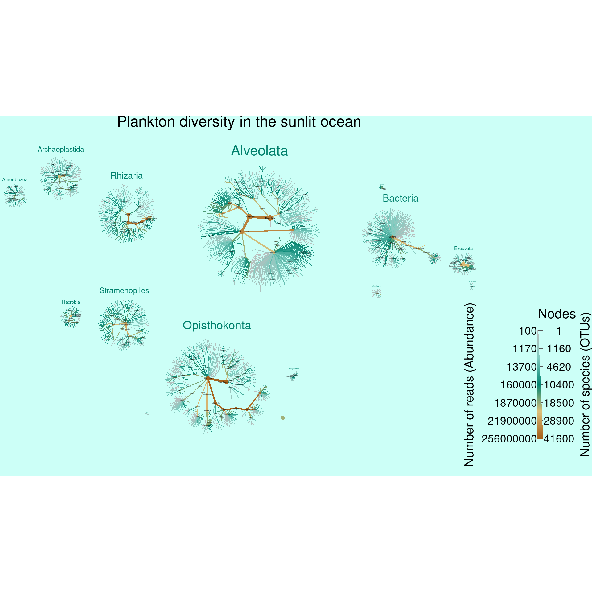

Tara oceans example
Requirements
NOTE: This analysis requires at least 10GB of RAM to run. It uses large files not included in the repository and many steps can take a few minutes to run.
Parameters
input_folder <- "raw_input" # Where all the large input files are. Ignored by git.
output_folder <- "results" # Where plots will be saved
output_format <- "pdf" # The file format of saved plots
pub_fig_folder <- "publication"
revision_n <- 1
result_path <- function(name) {
file.path(output_folder, paste0(name, ".", output_format))
}
save_publication_fig <- function(name, figure_number) {
file.path(result_path(name), paste0("revision_", revision_n), paste0("figure_", figure_number, "--", name, ".", output_format))
}Introduction
Here we present the code to reproduce the TARA Oceans figure in the metacoder publication. The TARA oceans expedition sampled ocean water from around the world and conducted 18S metabarcoding and metagenomics to infer species composition (De Vargas et al. 2015). Their paper mentioned that a large portion of the diversity found could not be well identified with currently available reference sequences. We decided to look at this using heat trees to see which taxonomic groups are poorly represented in reference databases.
Parsing taxonomic data
The data set at the below URL was downloaded and uncompressed:
http://taraoceans.sb-roscoff.fr/EukDiv/data/Database_W5_OTU_occurences.tsv.zip
Getting sample data
The sample data was downloaded from the URL below:
http://taraoceans.sb-roscoff.fr/EukDiv/data/Database_W1_Sample_parameters.xls
Caluculate read abundance per taxon
The input data included read abundance for each sample-OTU combination, but we need the abundances associated with each taxon for graphing. The obs function is used here to get a list of row indexes corresponding to OTUs for each taxon. There will usually be multiple OTUs assigned to the same taxon, especially for coarse taxonomic ranks (e.g. the root will have all OTU indexes), so the abundances at those indexes are are summed to provide the total abundance for each taxon.
obj$data$tax_abund <- calc_taxon_abund(obj, data = "tax_data",
cols = sample_data[["PANGAEA ACCESSION NUMBER"]])## Summing per-taxon counts from 334 columns for 9512 taxaPlot read and OTU abundance
First lets get an idea of the taxonomic distribution of reads and OTUs. This data set has many taxa (9512) and deep taxonomies (a max depth of 10), so graphing all of it effectively will be a challenge. To make it more likly that the layout algorithms can untangle it all, we filter out taxa with less than 100 reads and remove some of the coarse taxonomic ranks so that we get multiple trees per graph. Each tree is then easier to layout for the computer and easier to read for us humans (assuming you saved it as a PDF and zoom in). Additionally, we will remove some taxa that have ambiguous names since they do not provide any information. Note that we are not throwing out read or OTU counts when we do this filtering; the reads and OTU counts still apply to supertaxa (e.g. Metazoa) that were not filtered out.
seed = 9 #9, 10, 12 is good
set.seed(seed)
taxa_patterns_to_hide <- paste0("^", c("[X]+", "X\\+sp\\.", "NA", "root", "\\*", "sp\\.", "sp"), "$")
taxa_patterns_to_remove <- paste0("^", c("X\\+sp\\.", "NA", "root", "\\*", "sp\\.", "sp"), "$")
background_color <- "#ccfff7"
obj %>%
mutate_obs("tax_abund", abundance = rowSums(obj$data$tax_abund[sample_data[["PANGAEA ACCESSION NUMBER"]]])) %>%
filter_taxa(taxon_names == "Eukaryota", supertaxa = TRUE, invert = TRUE) %>%
filter_taxa(abundance >= 100) %>%
filter_taxa(! Reduce(`|`, lapply(taxa_patterns_to_remove, grepl, x = taxon_names))) %>%
heat_tree(title = "Plankton diversity in the sunlit ocean",
title_size = 0.03,
node_color_axis_label = "Number of reads (Abundance)",
node_size_axis_label = "Number of species (OTUs)",
node_size = n_obs,
node_size_range = c(0.0012, NA),
node_color = abundance,
node_color_range = c("grey", "#80cdc1", "#018571", "#dfc27d", "#a6611a"),
node_color_trans = "log10",
node_label = ifelse(grepl(pattern = "^[a-zA-z\\-]{1,25}$", taxon_names) &
! Reduce(`|`, lapply(taxa_patterns_to_hide, grepl, x = taxon_names)) &
abundance > 10000,
taxon_names, ""),
node_label_color = "#000000",
node_label_color_trans = "area",
node_label_size = (n_obs / (n_supertaxa + 1)) ^ 0.5,
node_label_size_trans = "area",
node_label_size_range = c(0.001, NA),
tree_label = taxon_names,
tree_label_color = "#00806c",
tree_label_max = 100,
initial_layout = "re", layout = "da",
overlap_avoidance = .65,
background_color = background_color,
# maxiter = 50, fineiter = 50,
output_file = result_path("sup_figure_1--tara_all_plankton_diversity"))
Plot propotion of OTUs identified
Next we will look at how well the reference database used was able to classify OTUs. This will give us an idea of how well current references databases account for the diversity of eukaryotes in the oceans. For each taxon we will identify the proportion of OTUs with less than a 90% match to the most similar reference sequence to approximate classification certainty.
# color_range <- c("firebrick1", "orangered", "orange", "yellow3", "yellowgreen", "green")
color_range <- c(viridis::plasma(10)[4:9], "lightgrey")
obj <- mutate_obs(obj, data = "tax_abund", mean_pid = vapply(obs(obj, data = "tax_data"),
function(x) mean(obj$data$tax_data$pid[x], na.rm = TRUE), numeric(1)))
# Percentage of OTUs with less than 90% idententiy
obj <- mutate_obs(obj, "tax_abund", percent_known = vapply(obs(obj, data = "tax_data"),
function(x) sum(obj$data$tax_data$pid[x] >= 90, na.rm = TRUE) / length(x) * 100, numeric(1)))We can plot this the same way that we plotted OTU and read abundance. In fact, we can preserve abundance information by letting the size of nodes and edges correspond to OTU and read abundance and using color to plot classification certainty. Since this figure will be part of the publication, we have not added node labels since they would not be visible at the scale publication figures are viewed.
seed = 13
set.seed(seed)
taxa_patterns_to_hide <- paste0("^", c("[X]+", "X\\+sp\\.", "NA", "root", "\\*", "sp\\.", "sp"), "$")
taxa_patterns_to_remove <- paste0("^", c("[X]+", "X\\+sp\\.", "NA", "root", "\\*", "sp\\.", "sp"), "$")
identified_plot <- obj %>%
mutate_obs("tax_abund", abundance = rowSums(obj$data$tax_abund[sample_data[["PANGAEA ACCESSION NUMBER"]]])) %>%
filter_taxa(taxon_names == "Eukaryota", supertaxa = TRUE, invert = TRUE) %>%
filter_taxa(abundance >= 100) %>%
filter_taxa(! Reduce(`|`, lapply(taxa_patterns_to_remove, grepl, x = taxon_names))) %>%
filter_taxa(n_subtaxa < 30 & n_supertaxa == 0, subtaxa = TRUE, invert = TRUE) %>%
heat_tree(
title_size = 0.03,
node_color_axis_label = "Percent of species (OTUs) identified",
node_size_axis_label = "Number of species (OTUs)",
node_size = n_obs,
node_size_range = c(0.0012, NA),
node_color = percent_known,
node_color_range = color_range,
node_color_trans = "linear",
node_color_interval = c(0, 100),
node_label_size = (n_obs / (n_supertaxa + 1)) ^ 0.5,
node_label_size_trans = "area",
node_label_size_range = c(0.001, NA),
tree_label = taxon_names,
tree_label_size_range = c(0.008, 0.035),
initial_layout = "re", layout = "da",
overlap_avoidance = .65,
# maxiter = 50, fineiter = 50,
output_file = result_path("sup_figure_2--tara_proportion_identified"))
identified_plotJust Metazoa
We can also plot a single tree for a little less overwhelming graph. Below, we plot only the metazoa using the same meanings for color and size. This is also a publication figure, so taxa have been filtered out more aggressively and only a few labels are shown.
seed <- 21
set.seed(seed)
taxa_patterns_to_hide <- paste0("^", c("[X]+", "X\\+sp\\.", "NA", "root", "\\*", "sp\\.", "sp", "neglecta", "Bothriocroton", "Thysanoessa", "Metridia", "Aidanosagitta", "Cephalopoda", "Craniata"), "$")
taxa_patterns_to_remove <- paste0("^", c("[X]+", "X\\+sp\\.", "NA", "root", "\\*", "sp\\.", "sp"), "$")
metazoa_plot <- obj %>%
mutate_obs("tax_abund", abundance = rowSums(obj$data$tax_abund[sample_data[["PANGAEA ACCESSION NUMBER"]]])) %>%
filter_taxa(abundance >= 3100) %>%
filter_taxa(! Reduce(`|`, lapply(taxa_patterns_to_remove, grepl, x = taxon_names))) %>%
filter_taxa(taxon_names == "Metazoa", subtaxa = TRUE) %>%
heat_tree(node_color_axis_label = "Percent of OTUs identified",
edge_color_axis_label = "Percent of OTUs identified",
edge_size = abundance,
edge_size_range = c(0.0005, 0.013),
edge_size_trans = "area",
edge_color = percent_known,
edge_color_range = color_range,
edge_color_trans = "linear",
node_size_axis_label = "Number of OTUs",
edge_size_axis_label = "Number of reads",
node_size = n_obs,
node_size_range = c(0.005, 0.03),
node_color = percent_known,
node_color_range = color_range,
node_color_trans = "linear",
node_color_interval = c(0, 100),
node_label = ifelse(grepl(pattern = "^[a-zA-z\\-]{1,25}$", taxon_names) &
! Reduce(`|`, lapply(taxa_patterns_to_hide, grepl, x = taxon_names)),
taxon_names, ""),
node_label_size = n_obs,
node_label_size_range = c(0.013, 0.018),
node_label_size_trans = "area",
node_label_max = 100,
initial_layout = "fr", layout = "da",
output_file = result_path(paste0("figure_1--tara_metazoa--seed_", seed)))
print(metazoa_plot)Combine plots
Finally, lets combine the two graphs to produce the publication figure.
Software and packages used
## R version 4.0.3 (2020-10-10)
## Platform: x86_64-pc-linux-gnu (64-bit)
## Running under: Pop!_OS 20.04 LTS
##
## Matrix products: default
## BLAS: /usr/lib/x86_64-linux-gnu/blas/libblas.so.3.9.0
## LAPACK: /usr/lib/x86_64-linux-gnu/lapack/liblapack.so.3.9.0
##
## locale:
## [1] LC_CTYPE=en_US.UTF-8 LC_NUMERIC=C LC_TIME=en_US.UTF-8
## [4] LC_COLLATE=en_US.UTF-8 LC_MONETARY=en_US.UTF-8 LC_MESSAGES=en_US.UTF-8
## [7] LC_PAPER=en_US.UTF-8 LC_NAME=C LC_ADDRESS=C
## [10] LC_TELEPHONE=C LC_MEASUREMENT=en_US.UTF-8 LC_IDENTIFICATION=C
##
## attached base packages:
## [1] stats graphics grDevices utils datasets methods base
##
## other attached packages:
## [1] cowplot_1.1.0 gridExtra_2.3 readxl_1.3.1 metacoder_0.3.5
## [5] stringr_1.4.0 glossary_0.1.0 knitcitations_1.0.12 knitr_1.30
##
## loaded via a namespace (and not attached):
## [1] tidyselect_1.1.0 xfun_0.19 purrr_0.3.4 GA_3.2 colorspace_1.4-1
## [6] vctrs_0.3.4 generics_0.1.0 viridisLite_0.3.0 htmltools_0.5.1.1 yaml_2.2.1
## [11] utf8_1.1.4 rlang_0.4.10 pillar_1.4.6 glue_1.4.2 foreach_1.5.1
## [16] lifecycle_0.2.0 plyr_1.8.6 ggfittext_0.9.0 munsell_0.5.0 gtable_0.3.0
## [21] cellranger_1.1.0 codetools_0.2-16 evaluate_0.14 labeling_0.4.2 fansi_0.4.1
## [26] Rcpp_1.0.5 readr_1.4.0 scales_1.1.1 jsonlite_1.7.1 farver_2.0.3
## [31] ggplot2_3.3.2 hms_0.5.3 digest_0.6.27 stringi_1.5.3 dplyr_1.0.2
## [36] grid_4.0.3 bibtex_0.4.2.3 cli_2.1.0 tools_4.0.3 magrittr_2.0.1
## [41] lazyeval_0.2.2 tibble_3.0.4 RefManageR_1.2.12 crayon_1.3.4 pkgconfig_2.0.3
## [46] ellipsis_0.3.1 xml2_1.3.2 lubridate_1.7.9 assertthat_0.2.1 rmarkdown_2.5
## [51] httr_1.4.2 rstudioapi_0.11 iterators_1.0.13 viridis_0.5.1 R6_2.5.0
## [56] igraph_1.2.6 compiler_4.0.3
References
De Vargas, Colomban, Stéphane Audic, Nicolas Henry, Johan Decelle, Frédéric Mahé, Ramiro Logares, Enrique Lara, et al. 2015. “Eukaryotic Plankton Diversity in the Sunlit Ocean.” Science 348 (6237): 1261605.